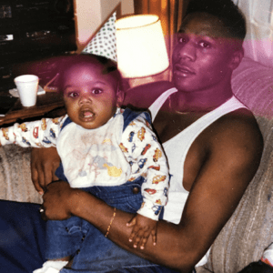

About DaBaby:
|
Jonathan Kirk was borned in Cleveland, Ohio, in 1991. He grew up in Charolette, and spent most of it in the streets. 2014, he decided to pursue a career in rapping by the name of Baby Jesus. A year after his debut as "Baby Jesus", he changed his name to "DaBaby" for "political reasons".
|
Accomplishments

|
Fun Facts
|  |
|
Top Singles
Suge has be on Hot 100 since it peaked last summer in June. DaBaby has 18 songs on Hot 100, including "Intro" from his latest album "Kirk."